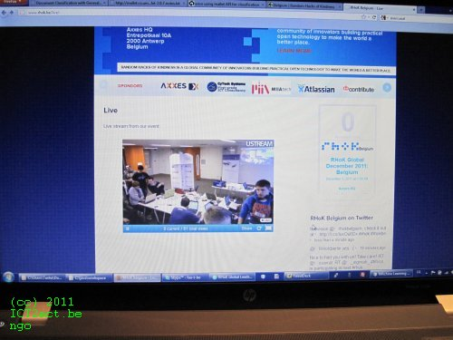

The mission of a Random Hacks of Kindness hackathon is to make the world a better place through a global community of innovation developing practical open technology.
Visit the global RHoK web site at http://rhok.org and the RHoK Belgium web site at http://rhok.be for more information. On Twitter we are: https://twitter.com/RHoKBelgium/ and in FlickR, you can find us here.
Impressions from Random Hacks of Kindness Belgium #1 – our 1st event in Belgium
The weekend of 3rd and 4th of december 2011 close to 1000 people gathered worldwide for RHoK Global to hack for humanity in 28 cities around the world. Tel Aviv kicked off RHoK Global on Friday morning and 60 hours and thousands of tweets later, hackers in San Francisco and Portland wrapped up the event with more than 90 hacks submitted globally.
From Banjul to Bangalore, from Porto Alegre to Pretoria, tech-savvy do-gooders collaborated with subject-matter experts in a wide variety of fields to build software applications for the benefit of their local communities and the world. Random Hacks of Kindness hackers came from diverse backgrounds: in addition to computer programmers, RHoK events included designers, project managers, PR and marketing professionals, UI/UX specialists, GIS mappers, and many more people volunteering their professional skills for a good cause.
Events around the world started off with anticipation high as participants followed other global locations via Ustream and Twitter and shared videos of RHoK introductions in other locations. Many events began with a Friday night meet-up and problem brainstorming session where experts and hackers began building out concepts to respond to proposed problem definitions. The experts proposing problems for RHoK Global included, among others, Oxfam, UN OCHA, Doctors Without Borders, the World Bank, InSTEDD, Ushahidi, Fragile Oasis, as well as numerous challenges posed by local, municipal and national government agencies.
Read more about this global weekend here: http://www.rhok.org/node/21989

This year (2011), Belgium joined the global round of RHoK Hackathons. 15 hackers from Belgium, a nice mixture of representatives of the 3 national languages (we had even a member of the German speaking community with us) joined on a nice place sponsored by Axxes to hack an entire weekend. The event has been organised by Maarten Cautreels and me, Tasha Carl. Here some impressions, more in our media library...
http://rhok.be / http://twitter.com/RHoKBelgium
Breakfast... a lot...
Starting with a presentation of Cloud Foundry.
And a lot of gadgets and goodies...
Beginning of the Hackathon, anybody concentrated...
Just the TV team spooking around :)
Live watching other events around the world...
And then – Pizza time, a lot of pizza, really!
Welcome!
Modern communication like it should be ... here with Berlin...
Paper? We don’t use paper! We are much more advanced!
Our own life stream online on our web page...
The project manager gets fried, sorry, interviewed...
Night, do not stop us (at least some of us)...